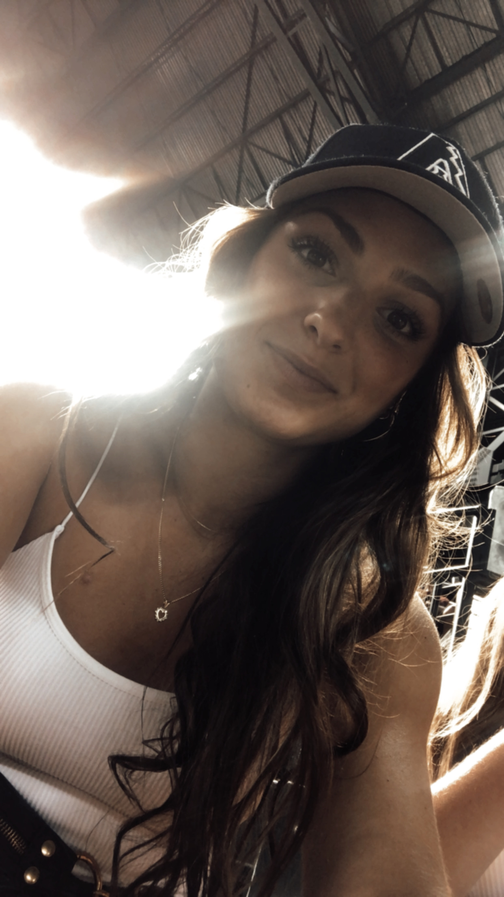

KONTAKT
Ich bin Shayna Jucker, eine neugierige Studentin im Bereich Multimedia-Produktion. Geschichten, Menschen und Orte haben meine Leidenschaft geweckt. Neben dem Studium verbringe ich gerne Zeit mit Freunden und Familie, und ich reise leidenschaftlich gerne, um neue Länder und Kulturen zu entdecken. Mein Ziel ist es, Geschichten auf kreative und innovative Weise zu erzählen, indem ich die Kraft von Multimedia nutze. Dies ermöglicht mir, meine Faszination für die Welt und meine technische Kreativität zu kombinieren, während ich die Vielfalt der menschlichen Erfahrung erkunde und diese mit anderen teile.